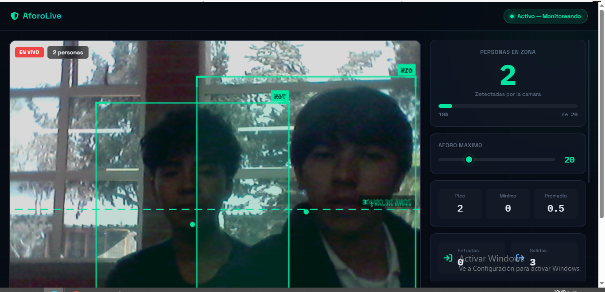
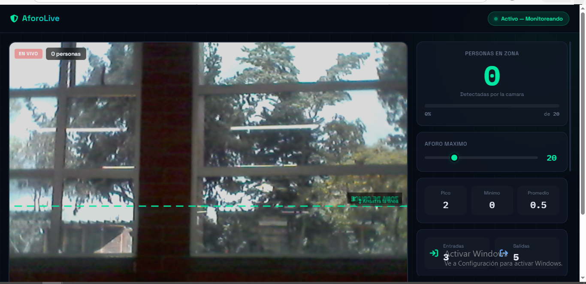
Sistema de Control de Aforo
Cuenta en tiempo real las personas que ingresan y salen de un espacio, y genera una alerta cuando se supera el límite permitido.
Ver proyecto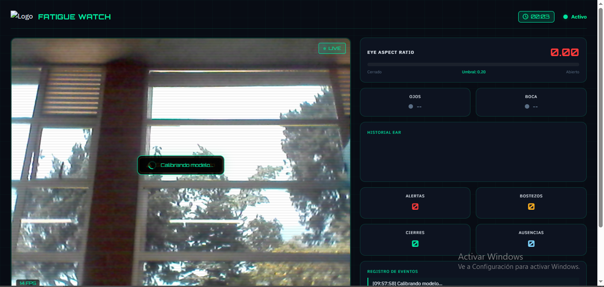
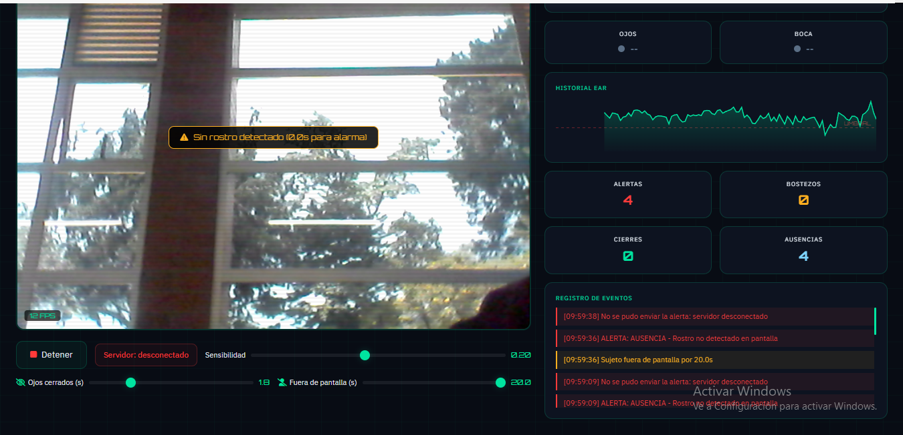
Detector de Somnolencia
Analiza el rostro a través de la cámara para identificar señales de sueño o cansancio y genera una alerta automática.
Ver proyecto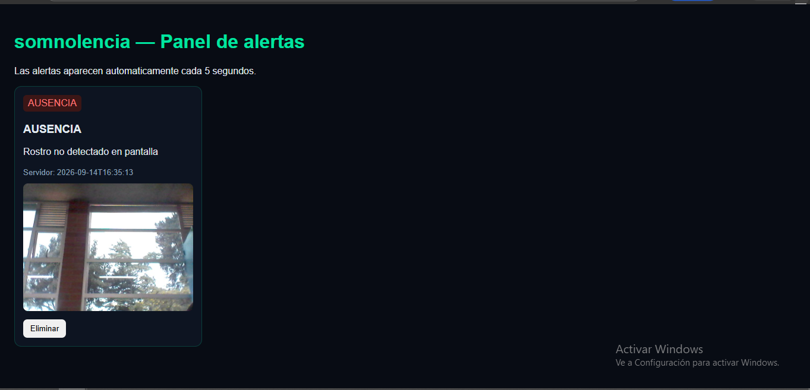
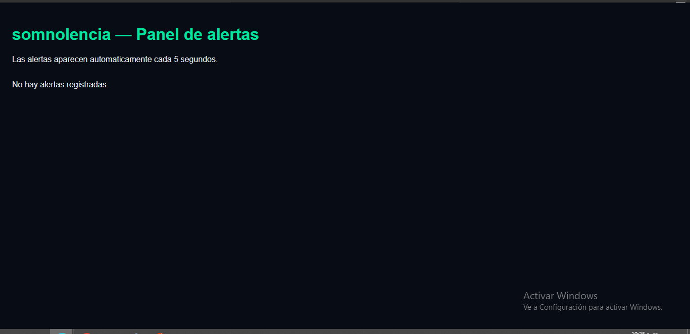
Monitor de Somnolencia
Muestra en un panel las alertas generadas por el Detector de Somnolencia, permitiendo supervisarlas en tiempo real.
Ver proyecto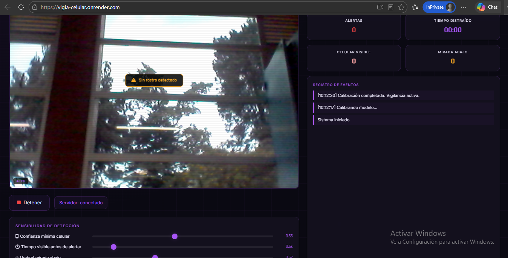
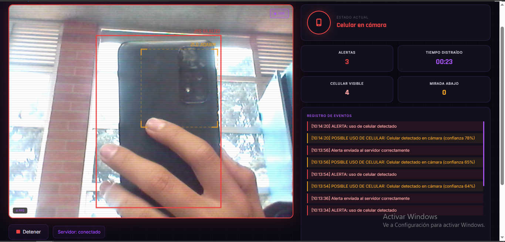
Vigía Celular
Detecta el uso o la presencia del celular en un espacio determinado y genera una alerta cuando esto ocurre.
Ver proyecto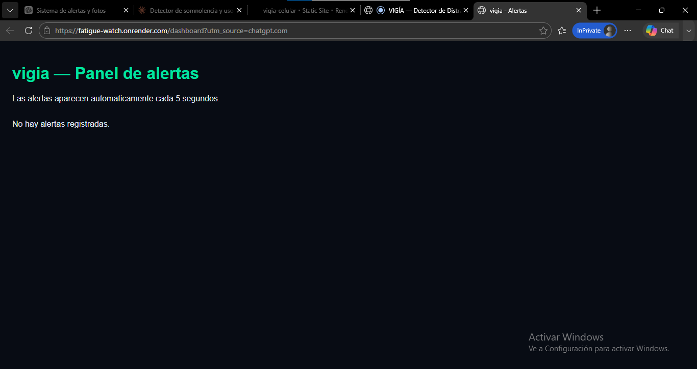
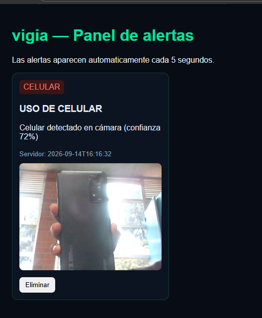
Monitor de Vigía Celular
Recibe y muestra en un panel las alertas generadas por Vigía Celular para su seguimiento y control.
Ver proyecto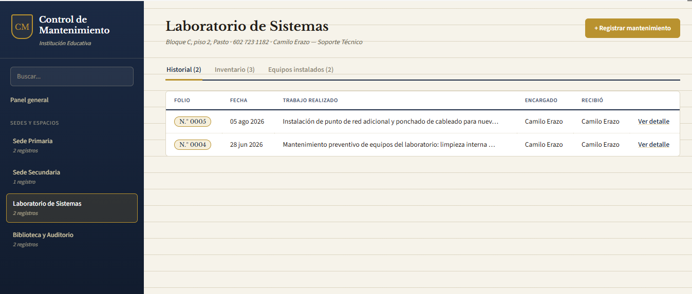
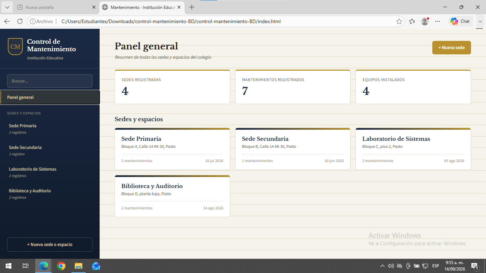
Sistema de Mantenimiento Escolar
Permite registrar y controlar los mantenimientos realizados en los distintos espacios del colegio.
Ver proyecto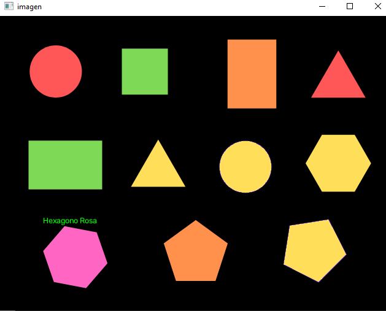
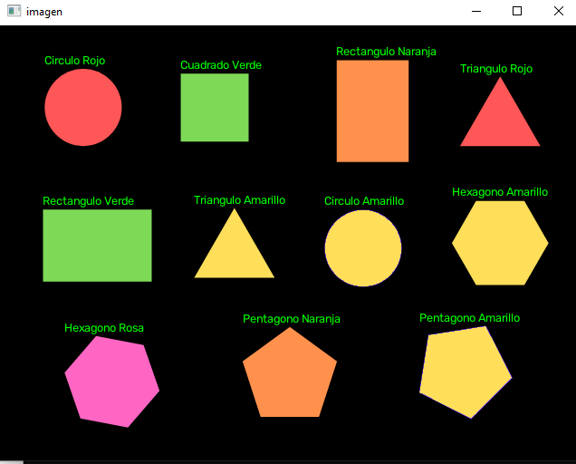
Detección de Figuras y Colores
Aplicación en Python que utiliza el algoritmo de Canny para identificar bordes y clasificar figuras geométricas por su forma y color en una imagen.